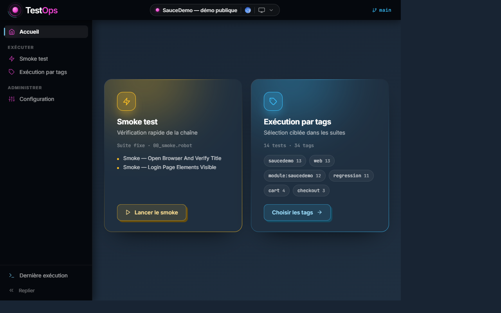
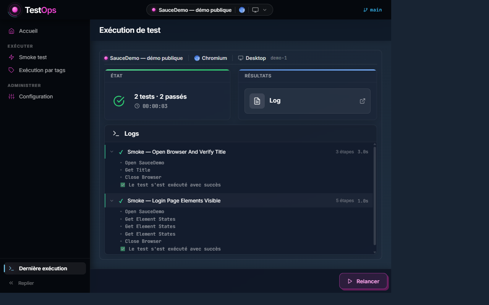

L'architecture avant le volume
Un framework modulaire vieillit mieux qu'un catalogue de scripts. Un changement d'écran ne doit pas faire tomber dix tests.
Ingénieur QA Automation
Livrer plus vite sans régression.
Je construis l'outillage qui rend les tests utiles : un framework Robot Framework couvrant Android, iOS, iPadOS, Web et Windows, et la plateforme d'orchestration qui va avec.

01 · Approche
Ce qui m'intéresse, c'est le moment où un test cesse d'être un coût de maintenance pour devenir un signal fiable. Un test qui échoue au hasard ne protège personne : il apprend à l'équipe à ignorer le rouge.
Un framework modulaire vieillit mieux qu'un catalogue de scripts. Un changement d'écran ne doit pas faire tomber dix tests.
Banc multi-OS, environnements, données de test provisionnées par API. Ce qui entoure le test décide de sa fiabilité.
Temps d'exécution, temps d'affichage, fuites mémoire. Sans chiffre, une lenteur reste une impression que personne ne corrige.
Dans mon éditeur au quotidien depuis plus de deux ans : elle propose, je relis, je tranche. Cadrée elle accélère, laissée libre elle invente.
02 · Réalisations
Conception et développement · utilisée au quotidien par l'équipe QA
Une équipe QA ne manque pas de tests : elle manque de moyens de les piloter. J'ai conçu et développé une plateforme 3-tiers qui met l'exécution, la configuration et le diagnostic entre les mains de toute l'équipe, pas seulement de celui qui a écrit les scripts.
Assistant de configuration, sélection des tests, suivi d'exécution en temps réel.
Routes fines déléguant à des services métier, découpage proche de la Clean Architecture.
Abstraction Appium multi-plateforme : Android, iOS, Windows MAUI.
Autour : configuration centralisée, chiffrement des credentials, reporting Allure / ELK, intégration CI / CD, provisioning des données de test par API.
TestOps reprend les mêmes partis pris sur des applications de démonstration : aucune URL dans les tests, aucun mot de passe versionné, un run qui part d'un contexte explicite. Elle donne à voir l'architecture et les décisions, pas l'étendue : la plateforme en service couvre en plus le mobile natif via Appium, évolue en continu avec le produit testé, et reste privée.
La démo rejoue une exécution enregistrée : logs, étapes, verdict et rapport sont réels, mais rien n'est exécuté dans le navigateur.

Outiller la chaîne, pas le prompt
Faire écrire un test par une IA est facile. Le rendre fiable est un problème de qualité : un test plausible mais faux est pire qu'un test absent.
Un ticket devient un scénario, le scénario devient un test, et le test est joué avant d'arriver en relecture humaine.
Le coût d'un agent, c'est ce qu'il lit, et ce qu'il a lu se repaie à chaque échange suivant. D'où des index générés depuis le code (tests, keywords, données, sélecteurs) qu'il consulte au lieu de parcourir le dépôt : il réutilise l'existant au lieu de le réinventer, pour une fraction du coût.
Avant qu'elle n'arrive, pas au moment de la revue.
Chaque vrai défaut devient une règle écrite, qui contraint la génération suivante.
L'assistant inspecte l'interface réelle pour proposer des sélecteurs qui existent, au lieu de les inventer.
Le gain n'est pas d'écrire plus de tests. C'est de raccourcir le trajet entre un ticket et un test que je suis prêt à défendre en revue.
Parallélisation sur le banc de tests, découpage par tags, injection des données de test par API plutôt que par l'interface. Le retour aux développeurs arrive dans la journée, plus en fin de sprint.

03 · Compétences
04 · Parcours
VEGA - Epsilog · CDI
Solutions de gestion et de télétransmission pour les professionnels de santé.
Garantir la fiabilité d'un produit multi-plateformes (Android, iOS, iPadOS, Web, Windows) avec une automatisation qui tient dans la durée.
MEDIN+ · CDI
Télémédecine et téléradiologie, coordination des soins non programmés.
Fitec / Devenez · 4 mois
Certificat de compétences professionnelles « Consultant testing agile », mention très bien.
GROUPE SOS · CDD
Recette d'une évolution du système de paie HRAccess.
Treize ans à faire tourner des organisations avant de faire tourner des tests. Ce qui en reste : le pilotage d'un projet long, la rigueur documentaire, et l'habitude de mesurer plutôt que de supposer.
05 · Formation
GASQ France · identifiant 22-CTFL-95169-FR
Scrum.org
Certificat de compétences professionnelles · Fitec
Orsys
Orsys
Fitec · mention très bien
Université de Montpellier